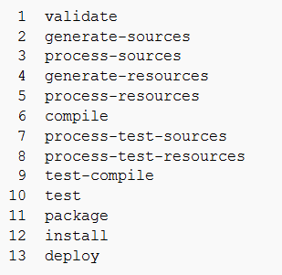

Open standards out-of-the-box DevOps solution
KumuluzDevOps is an integrated solution that consists of leading open-source tools for App/Service Development, Deployment and Lifecycle Management with full support. The solution covers the following aspects:
• Code – Code development and review, continuous integration tools
• Build – Version control tools, code merging, build status
• Test – Test and results determine performance
• Package – Artifact repository, application pre-deployment staging
• Release – Change management, release approvals, release automation
• Configure – Infrastructure configuration and management, Infrastructure as Code tools
• Monitor – Applications performance monitoring, end user experience
The specific goals of DevOps span the entire delivery pipeline. They include improved deployment frequency, which can lead to faster time to market, lower failure rate of new releases, shortened lead time between fixes, and faster mean time to recovery in the event of a new release crashing or otherwise disabling the current system. Simple processes become increasingly programmable and dynamic, using a DevOps approach. DevOps aims to maximize the predictability, efficiency, security, and maintainability of operational processes.
DevOps integration targets product delivery, continuous testing, quality testing, feature development, and maintenance releases in order to improve reliability and security and provide faster development and deployment cycles. DevOps aids in software application release management for an organization by standardizing development environments. Events can be more easily tracked as well as resolving documented process control and granular reporting issues. The DevOps approach grants developers more control of the environment, giving infrastructure more application-centric understanding.
KumuluzDevOps
KumuluzDevOps is a complete out-of-the-box DevOps solution for Continues Integration and Delivery, based on the open-source tools with full enterprise-grade support. KumuluzDevOps consists of:
•
Git and GitLab - a version control system that is used for software development and other version control tasks. As a distributed revision control system it is aimed at speed, data integrity, and support for distributed, non-linear workflows.
•
Maven - a build automation tool addresses two aspects of building software: first, it describes how software is built, and second, it describes its dependencies. Maven can be used to build and manage projects written in Java, C#, Ruby, Scala, and other languages.
•
Jenkins - provides continuous integration services for software development.
•
Nexus - a software repository from which software packages may be retrieved and installed,
•
Ansible - a platform for configuring and managing software, which combines multi-node software deployment, ad hoc task execution, and configuration management.
•
Nagios - application that monitors systems, networks and infrastructure. Nagios offers monitoring and alerting services for servers, switches, applications and services. It alerts users when things go wrong and alerts them a second time when the problem has been resolved.
•
xUnit/JUnit/NUnit - a unit testing framework supporting test-driven development.
•
Selenium - a portable software testing framework for web applications. Selenium provides a record/playback tool for authoring tests without learning a test scripting language. It also provides a test domain-specific language to write tests in a number of popular programming languages, including Java, C#/.NET, Groovy, Perl, PHP, Python and Ruby. The tests can then be run against most modern web browsers.
•
SonarQube - an open source platform for continuous inspection of code quality.
•
Markdown - is a lightweight markup language with plain text formatting syntax for documenting software and services.
•
KumuluzEE – microservice framework.
Features and Capabilities
Key business features and capabilities of KumuluzDevOps are:
• Overcomes challenges of globally distributed development - keeps all stakeholders synchronized
• Ensures seamless collaboration among
• Manages projects and resources across the tools, breaking down organizational silos
• Provides greater insights into the progress and quality of development projects to Project Managers, Business Analysts, Architects, Developers, and Testers.
• Helps monitoring exact status of different teams working on different areas of a project
• Maintains a centralized and single data repository for multiple phases and artifacts
• Provides interoperability, cross-repository linking and transparency across organizations
• Establishes end-to-end traceability of artifacts from within users' preferred tool environment
• Automates lifecycle processes cutting across tool boundaries
• Helps achieve continuous integration(CI) and continuous delivery(CD)through integration of multiple tools
• Reduces manual hand-offs between teams and tools mitigating chances of human error
• Saves time and cost in managing complex, multifarious projects
• Enforces best-practice processes across best-of-breed tools. No compromise on tool selection and its operability
• Ensures code quality and performance throughout the lifecycle processes
• Helps Managers gain greater insight into project anytime, anywhere
• Provides real-time actionable metrics to take corrective measures
Package and Deploy APIs, Business Processes, and Microservices
Packaging and deployment of APIs, business processes and microservices is fully supported. APIs are packaged and deployed with integration with KumuluzAPI and can be packaged and deployed automatically using Maven and Jankins plugins at build-time and Nexus and Ansible automation at deployment time. Business Processes provide full support for Jenkins/Maven with integration with BPM Suite. Microservices are natively supported by KumuluzEE framework (award winning framework for microservices and transition to the cloud).
App/Service Development in Traditional Programming Languages
Application and service development in traditional languages is fully supported. The KumuluzDevOps provides native support for Java, -NET languages, Phyton, Groovy, Perl, PHP, Ruby and other languages.
Automatic Packaging and Deployment
Automatic packaging is supported through Maven and Jenkins. Automatic deployment is supported through Ansible. Packaging is one of the build lifecycle stages of Maven (stage 11):

Project Object Model (POM) provides all the configuration for a single project. General configuration covers the project's name, its owner and its dependencies on other projects. One can also configure individual phases of the build process. For example, you can specify packaging the project, unit testing, etc. All POMs inherit from the Super POM by default. The Super POM provides default configuration, such as default source directories, default plugins, and so on.
Ansible Playbooks express configurations, deployment, and orchestration. The Playbook format is YAML. Each Playbook maps a group of hosts to a set of roles. Each role is represented by calls to Ansible call tasks.
Versioning and Version Management
Full support for versioning and version management is provided through Git/GitLab repository. The following is supported:
• Strong support for non-linear development: Git supports rapid branching and merging, and includes specific tools for visualizing and navigating a non-linear development history. A core assumption in Git is that a change will be merged more often than it is written, as it is passed around various reviewers. Branches in Git are very lightweight: A branch in Git is only a reference to a single commit. With its parental commits, the full branch structure can be constructed.
• Distributed development: Git gives each developer a local copy of the entire development history, and changes are copied from one such repository to another. These changes are imported as additional development branches, and can be merged in the same way as a locally developed branch.
• Compatibility with existing systems/protocols: Repositories can be published via HTTP, FTP, or a Git protocol over either a plain socket, or ssh. Git also has a CVS server emulation, which enables the use of existing CVS clients and IDE plugins to access Git repositories. Subversion and svk repositories can be used directly with git-svn.
• Efficient handling of large projects: Torvalds has described Git as being very fast and scalable, and performance tests done by Mozilla showed it was an order of magnitude faster than some version-control systems, and fetching version history from a locally stored repository can be one hundred times faster than fetching it from the remote server.
• Cryptographic authentication of history: The Git history is stored in such a way that the ID of a particular version (a commit in Git terms) depends upon the complete development history leading up to that commit. Once it is published, it is not possible to change the old versions without it being noticed.
• Pluggable merge strategies: As part of its toolkit design, Git has a well-defined model of an incomplete merge, and it has multiple algorithms for completing it, culminating in telling the user that it is unable to complete the merge automatically and that manual editing is required.
Software Configuration Management
The following Software Configuration Management aspects are supported:
• Configuration identification - Identifying configurations, configuration items and baselines.
• Configuration control - Implementing a controlled change process.
• Configuration status accounting - Recording and reporting all the necessary information on the status of the development process.
• Configuration auditing - Ensuring that configurations contain all their intended parts and are sound with respect to their specifying documents, including requirements, architectural specifications and user manuals.
• Build management - Managing the process and tools used for builds.
• Process management - Ensuring adherence to the organization's development process.
• Environment management - Managing the software and hardware that host the system.
• Teamwork - Facilitate team interactions related to the process.
• Defect tracking - Making sure every defect has traceability back to the source.
Testing and Test Automation
Testing and test automation are supported with full functionality of unit, integration, functional (UI) testing, and API testing, provided by xUnit/Junit/Nunit and Selenium frameworks. Furthermore, software quality assurance is supported by continuous inspection of code quality using SonarQube.
Testing and Test Automation is provided as a part of SevOps, fully integrated as Continuous Testing.
Runtime Management and Scalability
Runtime management and scalability is supported for the volume of transactions processed by the application (transactions per second (tps), requests per second, pages per second, etc.) and the response times required for an application to respond to a user's actions at such a load.
Scalability and elasticity are supported with full support for microservice architecture, full support for Docker environments and ability to provide elasticity on top of PaaS environments, such as Kubernetes and Mesos.
DevOps and Continuous Delivery
KumuluzDevOps provides full support for continuous integration delivery with full support for:
• Code – Code development and review, continuous integration tools
• Build – Version control tools, code merging, build status
• Test – Test and results determine performance
• Package – Artifact repository, application pre-deployment staging
• Release – Change management, release approvals, release automation
• Configure – Infrastructure configuration and management, Infrastructure as Code tools
• Monitor – Applications performance monitoring, end user experience